Australia Red Cross Lifeblood
Designing improvements for Lifeblood Australia digital experience to encourage current donors to continue donating.
Duration
2 weeks
Team
Millie, Enza, Hang and Chris
Methods
Market research, Comparative Analysis, User Interview, Affinity Mapping, Personas creation, Journey Map, Crazy 8s, Design Studio, MVP, Sketching, Wireframing and Prototyping
Client
Red Cross Lifeblood Australia
Deliverables
A Digital Solution to improve User Experience
Tools
Trello, Google Form, Otter.ia, Miro and Figma
Overview
Australian Red Cross Lifeblood is facing a huge problem. Thousands of appointments are being cancelled a week and 43% of first time donors are not coming back. After COVID, less people are donating regularly and more people are cancelling (1 in 5 to be exact) due to feelings of “social hangover” and stress caused by COVID. This is causing a downturn in blood supply and to keep up with demand, Lifeblood needs 140,000 more blood donors in 2022 to meet the needs of patients across Australia (an increase of 45 per cent).
Business Goal
Improve the digital experience to encourage donors to book more often.
Conclusions
We believe that the Donate Today feature will encourage donors to donate regularly and help Lifeblood meet the demand for blood, by prioritising time and location instead of date alone.
To be able to improve a digital solution, as UX Designers we needed to to evaluate and determine where the pain points were in the whole process of donating blood, and how we could meet the business goal of improving the digital experience to be able to encourage current donors to book more often.
From the user's perspective, we needed to understand:
- the behaviours and motivations of past and current donors
- how to motivate them to return
- identify any friction points in the donation process
The Research Phase begins
Understanding the impact of the Donation Process on donors through
Market Research and User Interviews
We needed to find out WHY donation rates declined during COVID, and WHAT motivates people to donate blood. Trhought Market Research, we were able to answer a few questions we had, and also prove some of our Assumptions about what was happening.
5 main reasons why people donate blood
Donor Identity
It makes me feel good to know that I helped someone.
Knowing someone
I know someone who is in need of blood.
Reciprocity
I donate in case myself or someone I know may need it.
Inspiration
I want to inspire others to do something good.
Fairness & Equality
If I am happy to receive blood, I should be happy to donate it.
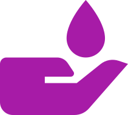Through the previous research, we learned that when you donate blood you are VOLUNTEERING with TIME(!!!). From that, we decided to learn more abotut what was happening with other Volunteer Organisations in Australia, to understand more about people's behaviours.
What stopped people from volunteering
Uncertain about COVID
“I’m unsure about COVID safety at premises.”
COVID Restrictions
“I cannot volunteer in person due to the restrictions.”
Finance Issues
“I cannot lose work time to volunteer.”
Family commitments
“I cannot fit in around family or caring commitments.”
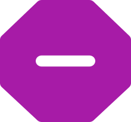Much of the research was geared towards verifying our assumptions and what opportunities we had. We conducted 20 User Interviews with the purpose of answering 4 main questions:
Why do people donate blood?
How the pandemic affected the life of the donors?
What were the reasons why they stopped donating?
How people donated blood?
The key of those interviews was to understand behaviour, motivations, feelings and pain points towards the Blood Donation process (from booking to getting in the clinic).
Our findings
We discovered that 55% stopped donating during COVID and 8 out of 20 didn’t donate for over a year.
Blood Donation during COVID
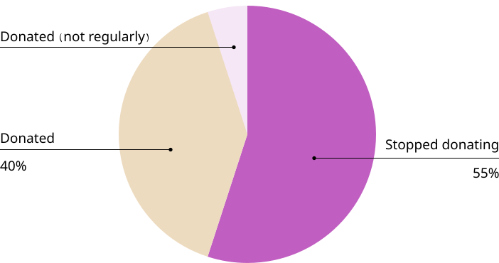Sinthesizing our data
We synthesised our interview answers on individual sticky notes. Organising them based on similarity and behaviours, we were able to identify the most common trends and pain points.
We rephrased the categories with “I statements” to help us bring the Human Element that we were looking for.
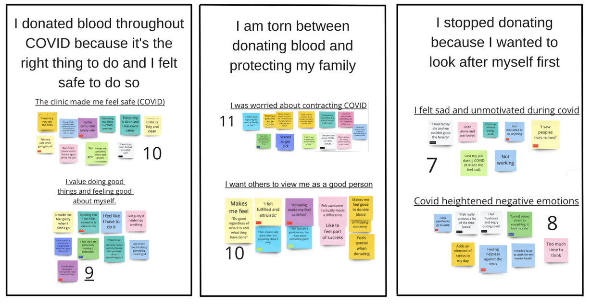Based on Affinity Mapping results, we identified 3 different personas, each with different behaviours and motivations towards blood donation, which correlated with our Secondary Research findings.
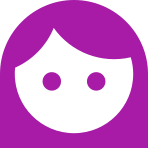“COVID didn’t impact my life.”
“I didn’t change idea about blood donation because I felt safe in the clinic.”
“I felt like I am personally making a difference.”
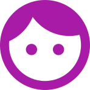“I can’t fit donations within my schedule”
“I felt really anxious trhoughout COVID”
“I used to donate but now I feel too emationally exhausted. It used to make me feel good.”
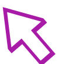 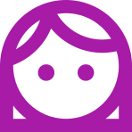“I didn’t donate as regularly during COVID as I didn’t want to put my life and my family at risk.”
“I donate because my family or I might be in need in the future.”
We had to understand each of their current problems to be able to focus on the one that we are going to solve. We decided that the persona that would make the GREATEST IMPACT for the BUSINESS was the one that used to donate before COVID and suddenly stopped. This is known from research that “It is easier to encourage past donors to donate more often”, and also meets the Target Audience recognised by the Client.
User Current Journey Map
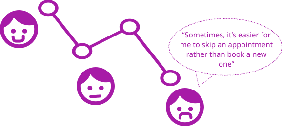After analysing the data gathered from our research, we were able to prove our assumptions about the problem and come to define the KEY PROBLEM, which was:
We went back to our Affinity Map and based on the insights we got from our user interviews, the answer is that:
"Max wanted to prioritise his schedule and emotional state over donating"
This helped us further refine what we wanted to solve for on the APP.
It’s time for IDEATION
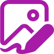Leveraging the HMW statement as a springboard and keeping in mind the definition of convenience, we generated 24 different ideas in 1 round of Crazy 8s.
 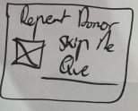
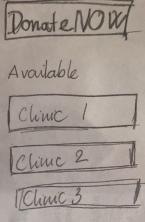
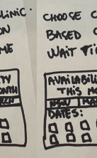
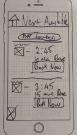
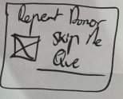
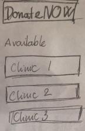
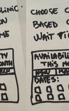
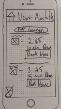


There were 3 similar ideas:
- An interactive map
- Fast track link
- Sorting clinics by distance and next available time.
But we needed further ideation based on the ‘Interactive map’ and ‘Sorting clinics’, so we decided to refine our ideas in a “Design Studio round”.
 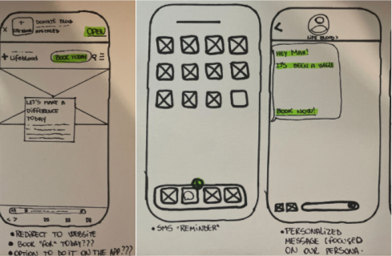
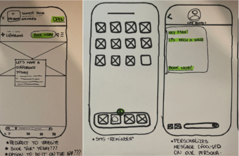
From there, we decided as a team to combine the main features we wanted to include in the APP to be able to solve the problem for the business, from the users’ perspective.
Which features to include?
Using an MVP matrix, we prioritised the features that would have the highest impact, for the lowest effort (by the business).
By voting, we decided to include those 3 following features:
- Show available location on map
- Next available time
- Notification (SMS) with a link to our Donate Today feature
Wireframing our solution
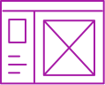We developed a low fidelity wireframe to test the flow of the App and the basic structure, which we then tested with four users and incorporated feedback.
Then we moved into a Mid-Fidelity prototype in which we had basic shapes, colours and text, which we also tested with four users and incorporated feedback.
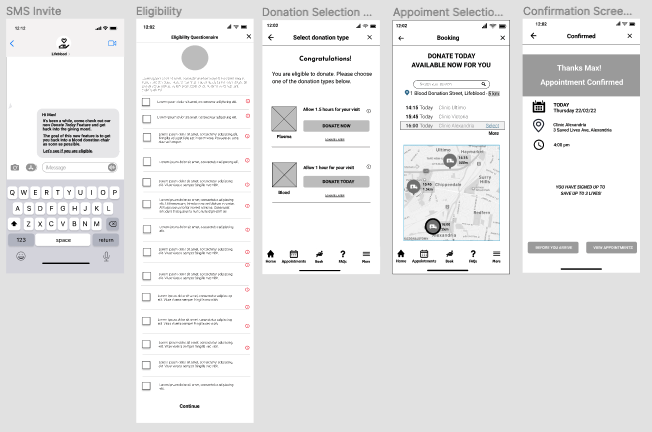Next, we got to High Fidelity Prototype where we developed the final product, look and feel of our solution based upon the current style guide and including new encouraging copy based upon brand identity, which we then tested with four users and made changes according to the feedback
Then, finally, we included updates and changes from that testing to see what it would look like.
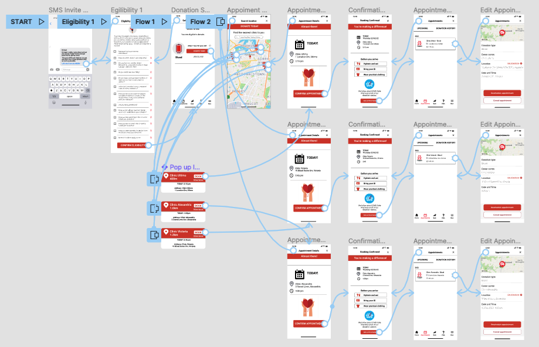The final solution - Our Hi-fi Prototype
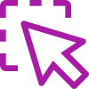Our solution streamlines the whole process for our user, reducing the amount of clickable screens from 4 to 2. At a glance, this screen shows “What appointments are available” and “How far away they are”. Once the user clicks into them he can see detailed info and go to the next screen to confirm his appointment.
- More Testings
- Further Iterations
- Develop an option for Plasma Donation
- Include other features according to our Minimum Viable Product analysis.
- We believe that we were able to achieve the business goals of improving their digital experience by implementing the Donate Today feature. This will encourage people who used to donate, to book more often;
- By Iterations and Usability Testing and implementing feedback, we were able to validate our process.
- Having deeper conversations with the users to find out their pain points, needs and especially behaviours is the key, it gives us a “North Star”.
- Creating a Team Charter at the beggining helped us move forward without any ambiguity according to roles or expectations;
- It was amazing to actually be part of such an amazing team, and being able to create a feature that can make a real difference to society.